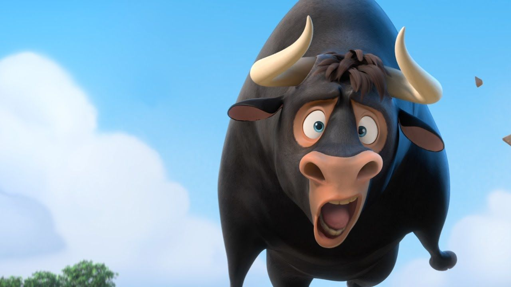

Ole el Viaje de Ferdinand92% de coincidencia 1 h 59 minEn España, un toro grande y amable llamado Ferdinand, a quien los demás toros ridiculizan porque no le gusta pelear, escapa un día y acaba siendo adoptado por un cultivador de flores, su hija, Nina, de quien se hace muy amigo, y su perro.REPRODUCIRTRAILERProtagonistas: John Cena, Carlos Sandagah, Eddie Redmay. Genero: Infantil.
 REPRODUCIR
TRAILER
REPRODUCIR
TRAILER